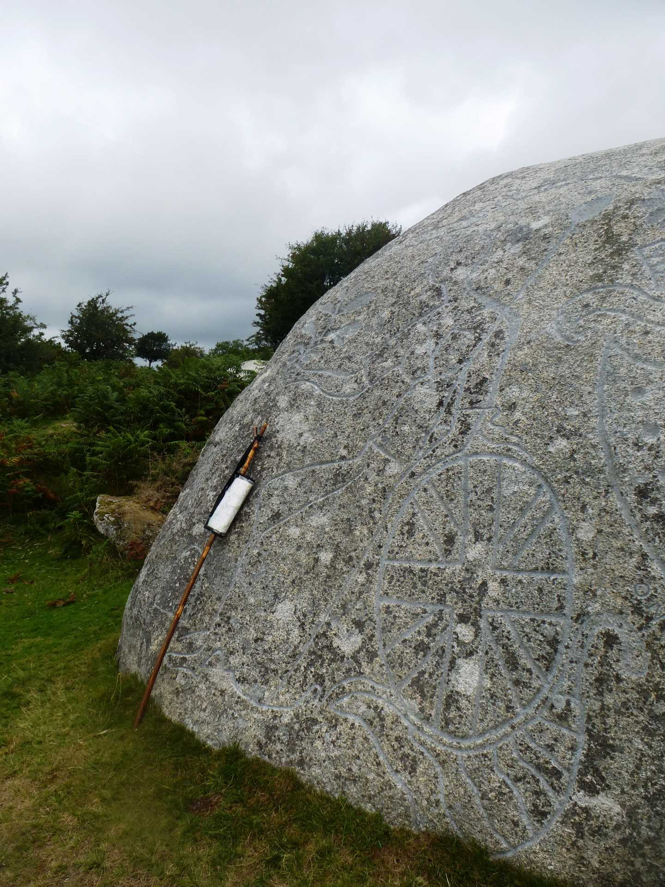
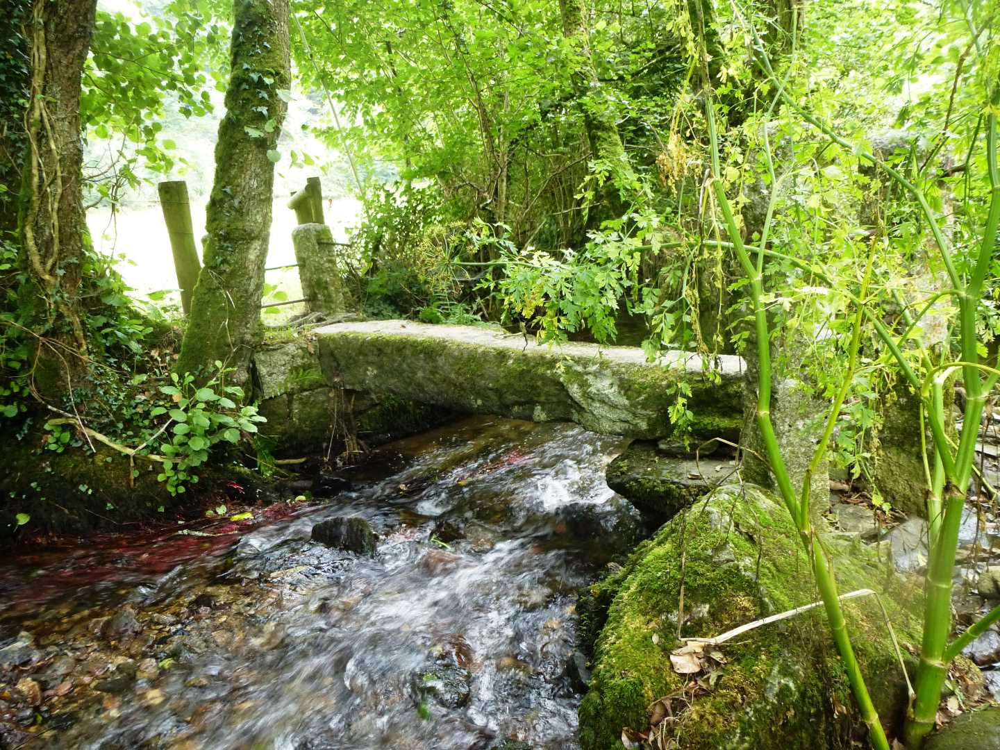

Start Ref: 100 732
End Ref: 100 732
Distance: 4 miles
Time: 2hrs
For this walk we leave our car by the village green at Blisland. Blisland is one of those remarkably attractive villages. It feels that it is in the middle of nowhere, yet at the same time you just know it has a strong identity and community, as a result the green is well kept, the public toilets are clean, the village hall well used, the shop, tea room and pub well frequented. You might have guessed, but if not, I really like Blisland.
There are many roads leading out from the green, and we are going to take the one signposted to Cassacawn (leaving the Manor House to our right) and we are going to follow this road for several hundred meters, passing a track on our left leading to Tumrose and leaving the public footpath to our left (although we are going to be returning on this path later). As we walk through Cassacawn we pass a signpost on our right to Waterloo before finding the road on our left that we want to take after a further 150 meters. We carry on up this road until we carefully step over a cattle grid and immediately step off the road onto a small path on our left. We follow this path rather than walking on the road, but we do find that the tracks keep trying to lead us further west than we want to go, so when the opportunity arises to bear right – do so!
After a few hundred meters, we rejoin the road and have a gentle, flat walk until we come to a Y junction. On the opposite side of the road and slightly up the left hand branch of the Y, there is an opening that takes us over the hedge and out on to Pendrift Downs. We want to proceed in a NW direction and this will bring you to a wide track (if you should bear to far left/west then head right after you reach the tree lined hedge). Once at the broad track we can follow it left/west and suddenly we find in amongst the bracken and furze an impressively large granite rock. This is no ordinary rock, take time to have a look around and marvel at the inscriptions and designs. It was designed in 1810 by local, Lieutenant John Rogers to commemorate the fiftieth anniversary of King George III`s reign, and has numerous carvings over all faces.
Once we have finished admiring Jubilee Rock, we continue west along the path to a small gate and follow this path down and into Pendrift. At Pendrift we turn left and over the cattle grid before leaving the road and joining the footpath over the fields. This path, which takes us over three fields, is well marked and fenced to stop any chance of us straying. We leave the fields by way of a stile and drop down onto the road, where we want to turn left and head up to the entrance on our right which takes us back onto the footpath. This path now leads us alongside the holiday cottages here and almost into their gardens (but not quite). This in turn gives way to two fields – in which there are often cattle – and then down to Tumrose. At Tumrose, which is a well maintained selection of properties, we step back into the fields ensuring that we stay on the public path and not walking down the private track. I have tended to walk around the outside of these fields, although the footpath does go diagonally across the middle of them, but as I have family who are farmers I have always been brought up to respect their place of work.
At the end of the second field we come back out on the road just below the turning to Waterloo, and find ourselves back on the same road that we were on an hour ago. We need to turn left here, before turning right and now head down hill towards Waterloo. As we near the bottom of the hill we find a Bridleway on our right (just before the bridge) and we are going to turn on to this path. We follow along and pass an old watermill on our left. This still has the remnants of the wheel gearing on the side of the building and if you look to the right you can see where the water ran out of (what I presume to be) a leat, to drive this wonder of our forebears. A little further on the track widens before joining the road, where we now turn left and then, once over the bridge, we turn right and go through the main gate (not the small gate to the left which is signed as the Public Footpath) that leads into Lavethan Wood.
This ancient broadleaf woodland is a Nature Reserve, and now we can follow the stream on our right. This stream has its source out on Trehudreth Downs, and eventually flows down to join the River Camel. After approximately half a mile the wide track splits, with the left branch heading up, and the right (which we are taking) leads to a gate which in turn leads through to a valley base field. 200 meters along the field and on the (right) northern boundary, there is a gate which we are taking and this leads through to a lovely narrow granite footbridge.
Beware! I have tried to take clever angle photographs of this bridge, and the stones are VERY slippy!
On the other side of this bridge we are now going to follow the path as it leads us to the right and slowly up the valley side until we reach a steeper section that in turn leads us to the steps that bring us out below the Church in the heart of Blisland.
We have now completed our walk, as on the other side of the Church, is the village green. Should you feel in need of refreshment, then you have the choice of The Tea Rooms – to our right, or the Blisland Inn – straight ahead. The choice is yours, they are both very welcoming.